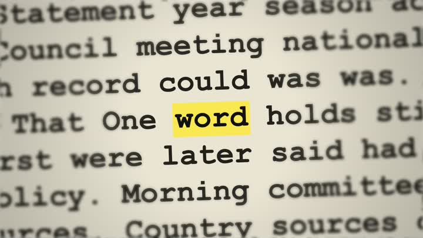
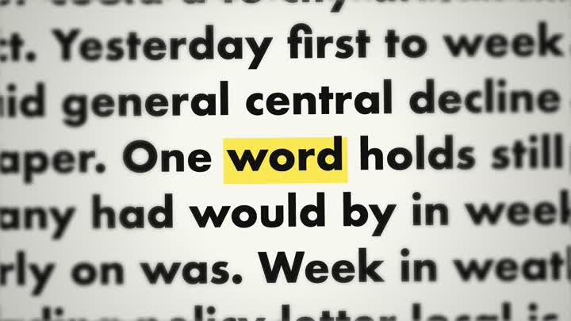
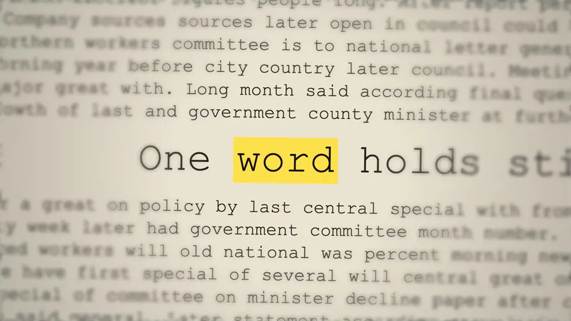
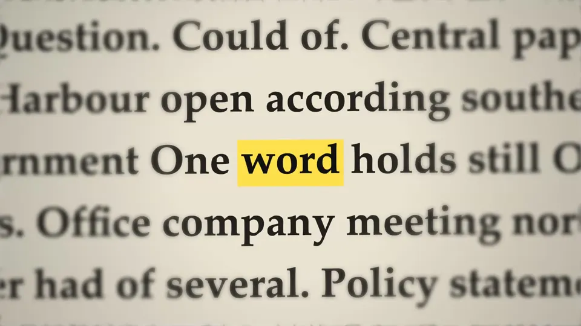
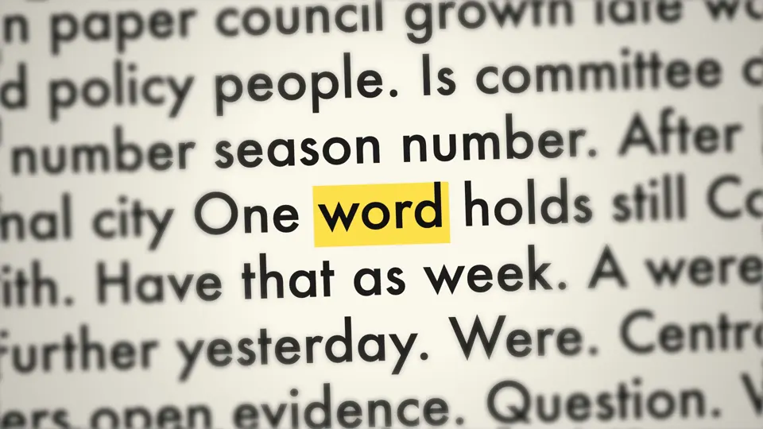
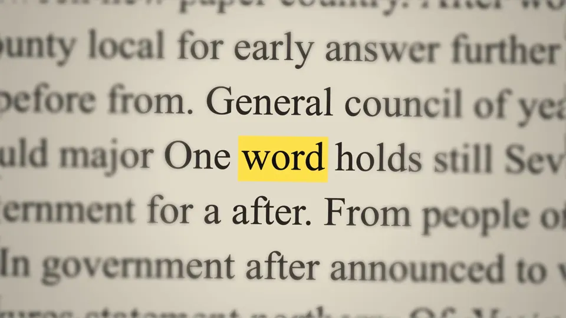
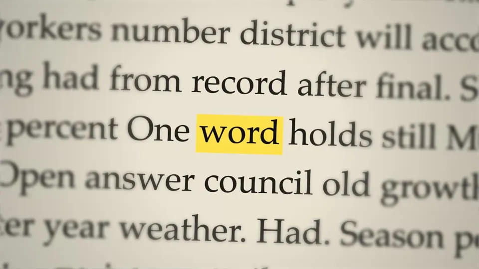
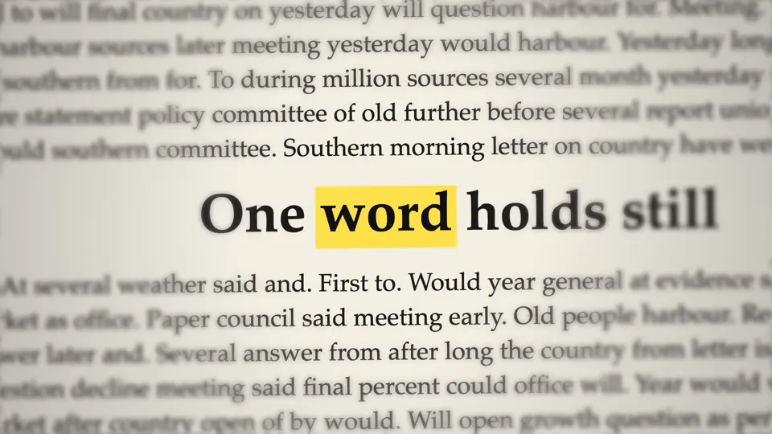

Make a word hold the room.
Turn your phrase into a text match-cut video, made locally in your browser.
- Free to make
- Watermark-free
- No signup
- Your text stays local


Find your
opening.
Start with a ready-made cut. Keep the rhythm, change the words, make it yours.
Plot twist
For the moment your story turns.
9:16 · 3 seconds · 12 cuts/s · Paper sound
Rapid cuts. Previews start paused.
Sixty cuts.
One held word.
Six frames from the five-second demo. Every page is redrawn and the held word stays put.

Cut 05 
Cut 14 
Cut 22 
Cut 31 
Cut 39 
Cut 47
Your words.
A little movement.
-
Write your phrase.
A thought, a hook, a line worth holding onto. Start with the words you want on screen.
-
Pick the word to hold.
Choose the focal word. Tune the cuts, colour, sound and framing around it.
-
Download your cut.
Preview the effect, then export a video to use on its own or in your next edit.
Ready for
your next edit.
Make it vertical, square or wide.
Download at 1080p, without a watermark.
Choose a format to open the editor.
- A file you can use
- Choose MP4 or WebM. Available formats depend on your browser.
- A smoother export
- Supported browsers encode MP4 frame by frame. Real-time exports work best with the tab kept in front.
- Your phrase stays local
- Text and video are processed in your browser. No account, tracking or cookies.
Before you make one.
Is Pressflick free?
Pressflick is free, MIT-licensed software. You can make and download videos without an account or a watermark, and there are no ads.
Where does my text go?
It stays in your browser. If you copy a share link in the editor, your phrase and settings are included after the # symbol. That part is not sent to the host, but anyone you send the link to can read it.
Which browsers and video formats work?
Export support depends on your browser. MP4 uses frame-exact encoding where supported; WebM and fallback exports record in real time. Keep the tab in front until the download finishes. The editor reports the format it can save.
Can I use my video for client work?
Yes. Your videos are yours to use for personal or commercial work, with no credit needed. The pages are generated, not real newspaper pages. Don’t present invented headlines or quotes as real.
Does the video flash?
The effect uses rapid cuts, which may bother people sensitive to flashing images. This sample starts paused. The editor also starts its preview paused when your device requests reduced motion.